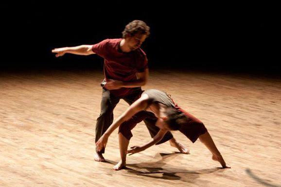

Innocent Looking Problem, 2013
A study of 'movement paradoxes' (is a movement paradox something we are physically unable to accomplish? or a conceptual contradiction?) and 'impossible tasks' (e.g. do the material as if the front of your body is the back of your body and the back of your body is the front). The interest was not in completing the tasks but in the methodology with which the task was approached. In what ways does the mover compromise to achieve the task at hand? What does the mover choose to hold on to? Does this reveal the very essence of the material?
